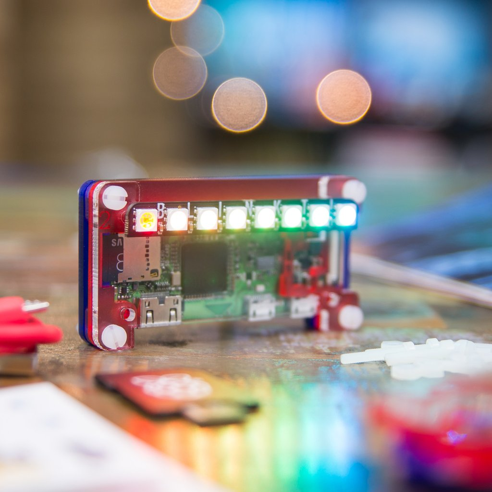
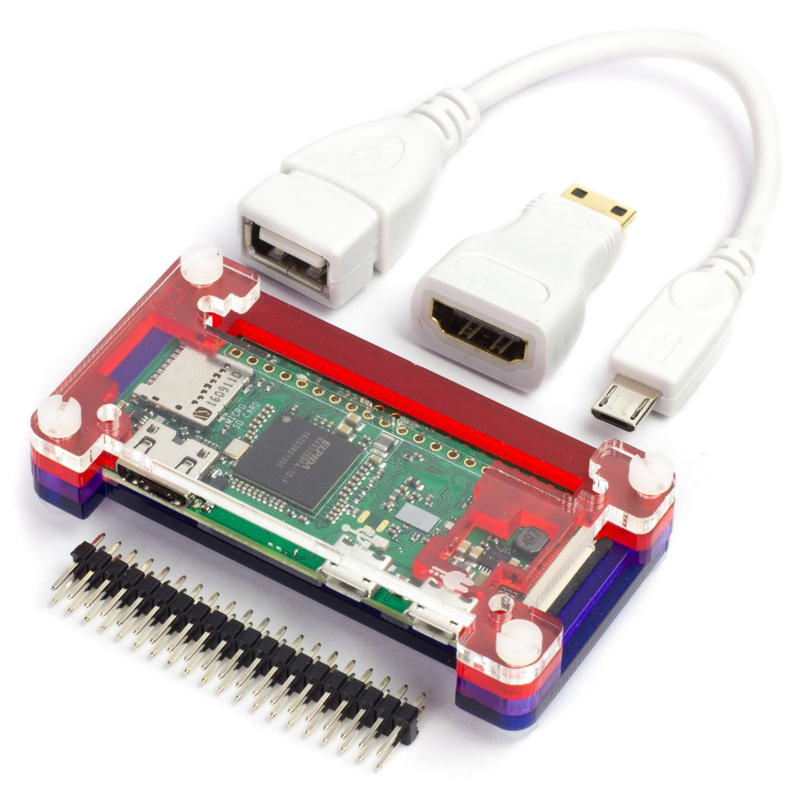

¿Esto qué es? ¿Se come?
Desde el GUL llevamos un par de años entrando en el terreno de desarrollar nuestros propios juegos, hasta el punto de que algo que surgió como una medio broma ha dado lugar a dos juegos y a un grupo de trabajo de más de 20 personas (incluyendo programadores y artistas).
El salto lógico como no podía ser de otro modo era organizar nuestra propia game jam.
¿Qué es una game jam?
Una game jam consiste, de forma simplificada, en un hackatón (hackathon in english) pero centrado en el desarrollo de videojuegos. La duración no tiene necesariamente que ser 24 horas ni un fin de semana exclusivamente, hay multitud de game jams con duraciones muy diferentes. Las más conocidas a nivel internacional son la Ludum Dare, Global Game Jam o mismamente Itch.io donde se alojan muchas y diversas game jams.
Los equipos no suelen ser muy grandes, de forma que haya 1 o 2 personas encargadas de la programación 1 de los gráficos y otra de la música (si es posible, aun que internet es un gran lugar con música libre de derechos).
Al comienzo de cada game jam se da un tema (quizás aleatorio, quizás temático) sobre el que los concursantes deberán desarrollar sus juegos, siendo uno de los aspectos a evaluar, el que el juego se ajuste a la temática. Por ejemplo, una temática podría ser "Enemigos" y se podrían hacer juegos tales como: Ser el malo del videojuego, descubrir un espía entre tus aliados o simplemente matar el mayor número de enemigos posibles.
Los equipos no suelen ser muy grandes, de forma que haya 1 o 2 personas encargadas de la programación 1 de los gráficos y otra de la música (si es posible, aun que internet es un gran lugar con música libre de derechos).
Al comienzo de cada game jam se da un tema (quizás aleatorio, quizás temático) sobre el que los concursantes deberán desarrollar sus juegos, siendo uno de los aspectos a evaluar, el que el juego se ajuste a la temática. Por ejemplo, una temática podría ser "Enemigos" y se podrían hacer juegos tales como: Ser el malo del videojuego, descubrir un espía entre tus aliados o simplemente matar el mayor número de enemigos posibles.
¡Pero yo no sé nada de todo esto!
¡Tranquilizaos todos! Respirad pausadamente y que no cunda el púnico. Ya sabemos que la gran mayoría de gente no sabe nada relacionado con el desarrollo de videojuegos y que hay otro número de gente interesada pero que no sabe programar. Lo tenemos todo pensado. Por eso se darán una serie de talleres donde os enseñaremos desde lo más básico para que todos podáis disfrutar de la Gul Jamón como es debido.
Además, si quieres obtener un crédito optativo o de humanidades es tu oportunidad, ya que, si asistís a estas sesiones de formación junto con la sesión presencial de la Gul Jamón, podréis solicitar uno de los dos créditos.
- Se realizará una semana de formación durante la segunda semana de junio en la tarde. Comenzando así el lunes 4 y acabando como muy tarde el viernes 8. Siendo sobre las 17:00-20:00 de cada día. Las aulas serán la 7.1.J02 para Pygame y la 7.1.J05 para Godot.
- Finalizaremos el viernes 15 en las aulas 7.1.J03 y 7.1.05 en una sesión de 9:00 a 19:00 en la cuál comenzará la ansiada Gul Jamón, dando la (o las) temáticas sobre las que deberéis desarrollar el juego.
- A partir de las 19:00 serán las presentaciones y posteriormente la entrega de premios.
Además, si quieres obtener un crédito optativo o de humanidades es tu oportunidad, ya que, si asistís a estas sesiones de formación junto con la sesión presencial de la Gul Jamón, podréis solicitar uno de los dos créditos.
¿Qué puedo aprender?
Desde el GUL vamos a ofrecer formación para el lenguaje de programación Python y el framework Pygame. Se trata de un framework relativamente sencillo y amigable para realizar juegos en 2D sin muchas pretensiones.
Si has leído hasta aquí es por que debes de tener alguno de los siguientes síntomas:
- Unas ganas completamente incontrolables por conseguir ese crédito de humanidades que te falta
- Aprender Python/PyGame o algún que otro framework open source para hacer juegos
- Programar un juego en un único día y poder fardar de él
- O todos los síntomas y la única forma de curarte es aceptando esta misión... ¡Que tiene recompensa para los tres mejores juegos!
- 
- Kit Raspberry Pi Zero W
- 
- Raspberry Pi Zero W + Adaptadores

- Raspberry Pi Zero W
- La GUL Jamón 2018 ha finalizado! Con suerte nos vemos en 2019! :)